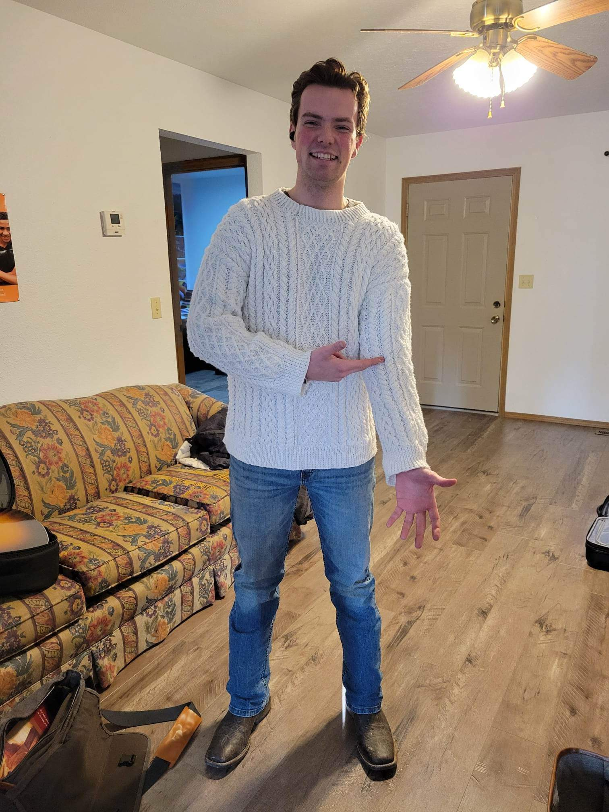
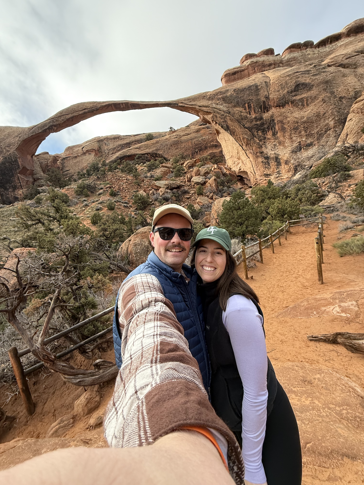
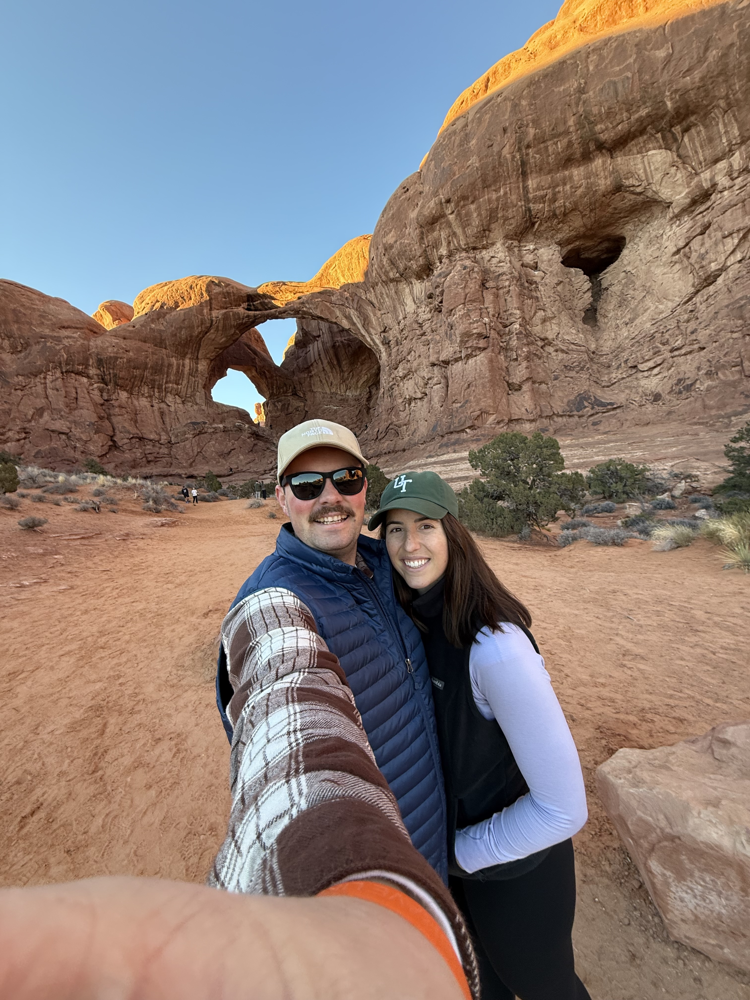
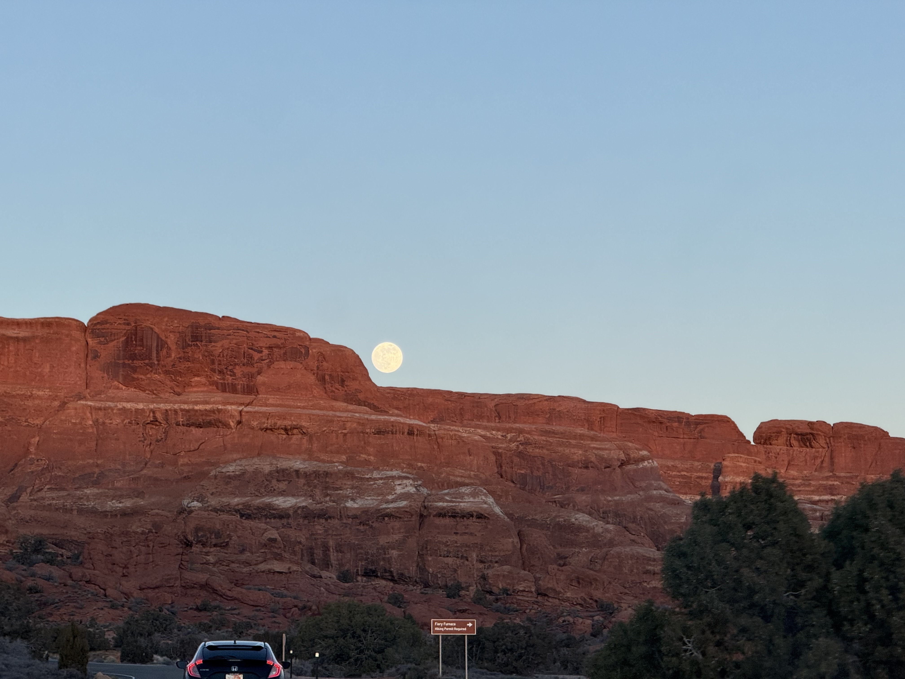
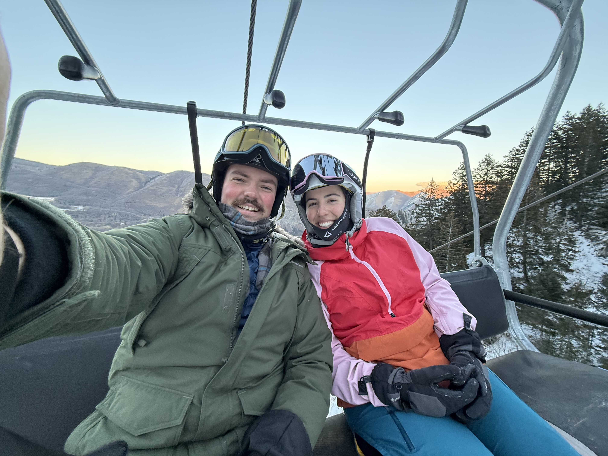
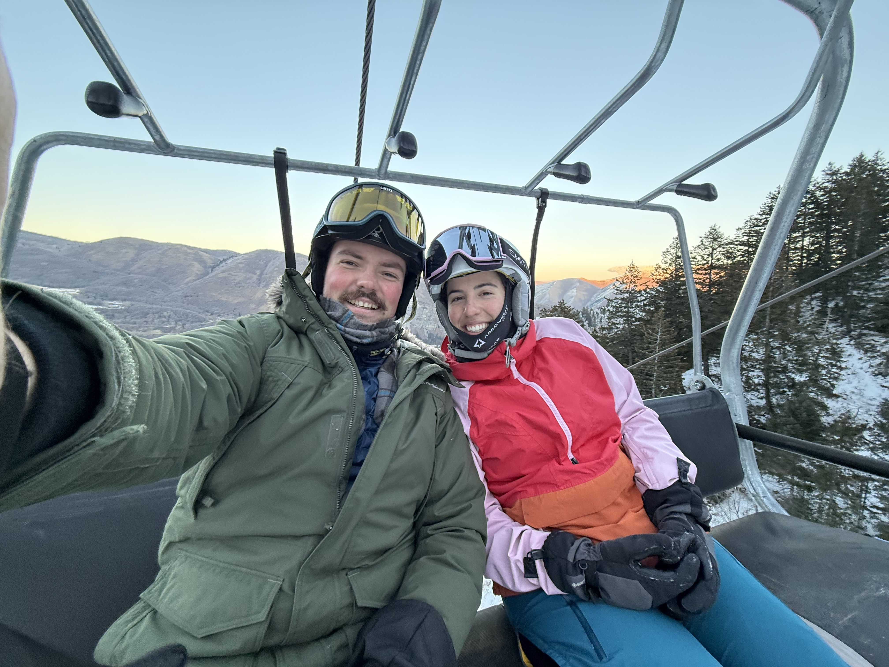
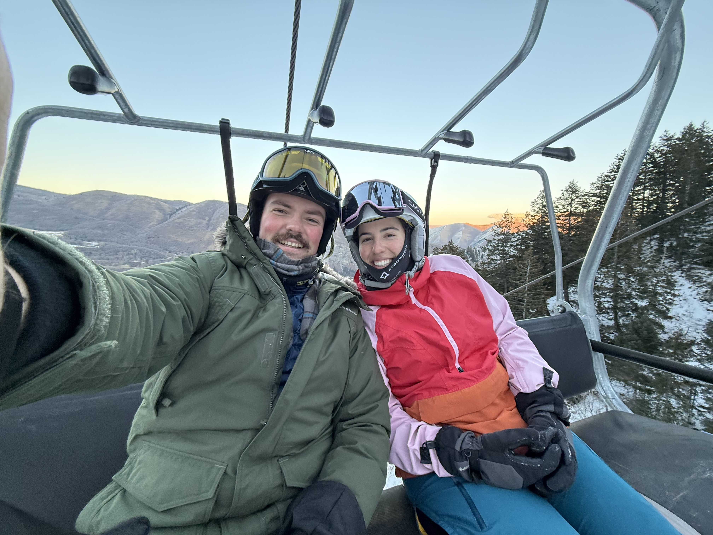

Hi! I'm Matthew. I'm studying Statistics with an emphasis in Data Science, and a minor in Computer Science. I love my major because I love guessing things and being right. I've also always been a builder, so building inside a computer really scratches that itch for me.
In less professional terms, here are some of my favorite things I've made:
my_easy_game
This is a simple game that I implemented in python. Really what I wanted to do was to implement a way to save someone's password, username, and user data using a python script, and what better data to store than data for a video game. There are only three levels and it's all pretty easy, but I had a lot of fun making it. Here are some pictures of the game in action, and I'll include a zip of all the necessary files for you to download and run 'my_easy_game'.
I also love to work with my hands. In high school that took the form of woodworking, but more recently it has taken the form of knitting and crocheting. I've been knitting/crocheting for 3 or for years now and I love it.
This sweater is the piece I am the most proud of:

It was inspired by Chris Evans' sweater from the first Knives Out movie, and you can find the plans here.
I just finished crocheting a stuffed turtle (sadly I no pictures), and I'm working on remaking that 'Chris' sweater. When I made it the first time I used a pretty cheap yarn, and the overall construction wasn't great, so I got nicer yarn, and now I'm working along.
Adventures
Moab
My true love is going on an adventure, of any kind. One of my most recent favorites was a trip to Moab in January of 2026:



Skiing
I also love to ski! I had never skied before I met my wife, Sarah, but she has shown me the way. Most saturdays you'll catch us somewhere on the mountain.

Elbow River (August 2025)
Last but not least (for this list) was my trip this past summer to go kayaking with my brother in Canada. We floated down the elbow river (not very far) and just spent the day out in the wilderness. We didn't have a lot of time, but I'm excited to go back once the weather gets warm.
 
